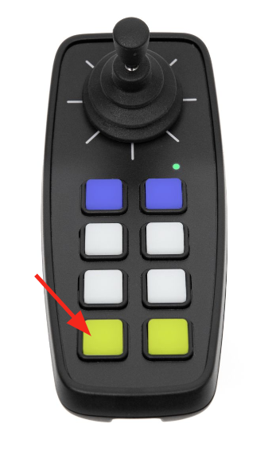

Do It! CMPSR: Create a Sound Story
 The Challenge
The Challenge
Your challenge is to create a sound story. Find or record sound effects using GarageBand, then use CMPSR to play your sound effects as you read a chosen or original story.
Project Steps
-
Pick or Write your short story
-
Pick Your Sound Effects
-
Record Your Sound Effects
- Read Your Story
Pick or Write Your Short Story
You first need to pick the story you want to read or plan to write your own short story. Keep in mind that you are adding sound effects, so you want to make sure your story is one you feel comfortable adding sounds to.
If you are writing a story, be creative with it! You can use the Short Story Planning Template to help you plan. There is even a section to brainstorm your sound effects. After you have planned your story. You can begin writing it. Consider including onomatopoeia words like “buzz, crash, or shh” to easily incorporate sound. You may also consider the details you want to include in your story and how you can use sound alongside them to strengthen your story.
Pick Your Sound Effects
As you read through your story, decide where you will want to add your sound effects. Use the sound effects section of the template to help you plan. Think about how you can use sound effects throughout your book to convey feelings or emotions. If something surprising happens, you could play a surprised sound effect. If it’s a funny book, you could consider including laughing after a joke. You could even have special sounds for each character such as a lightning bolt for the villain. As stated above, onomatopoeia is a great place for a sound effect. You could also use common sounds you hear everyday like birds chirping, train whistles, cars driving, etc. It just depends on what your story is about. You can also include them to let the readers know what is about to happen or to enhance what is happening. Some examples could be: it’s raining so you include the sound effects of raindrops, there is a knock at the door so you include a knocking sound, a character is happy so you include an upbeat sound, animals are making noises, etc. Just remember, the sounds are being used to enhance the book as you read it. Each place that you are going to include a sound, you should make a note on the template of what sound and where so that you remember.
TIP
If you are choosing a story instead of writing your own, you can use sticky notes to plan your sounds so you don’t write on the pages.

Find or Record Your Sound Effects in GarageBand
After you decide what sound effects you want to include in your story, you will need to find or record them! Sound designers use pre-recorded sounds, but they also record sounds that they make themselves using different objects and themselves. If they wanted to mimic opening a present, they may crinkle paper, for bird wings they may flip pages in a book, they could even make the sound of rain by tapping their fingers on a table. You should also browse the pre-recorded sounds in the sound library to see if there are any of those you want to use. To get to the sound library go to the instruments page and scroll until you see the sound library.

As you are finding and/or recording your sound effects, you may find it useful to try them out on CMPSR. Remember that each direction of the joystick on CMPSR represents a different note and that you can edit the pitch and scale of CMPSR on the device itself.
To make the sound deeper in pitch press pad 7 on CMPSR to move down (an octave) (to lower notes.) Try it again to use even lower notes.

Use pad 8 on CMPSR to move up (an octave) (to higher notes.)

You’ll notice the colors of the pads change depending on how high or low the notes are that you’ve chosen.

To change the scale on CMPSR first press pad 1 for 3 seconds to enter the settings page

Then use pads 7 and 8 to move up and down in pitch, similar to making the sounds deeper or higher as before but just one note at a time.

You can also change between a major scale which sounds happy and a minor scale that sounds sad by pressing pad 6 in settings. If it is orange you are playing a major scale and if it is yellow you are playing a minor scale.

Try out the different notes, pitches, and scales to see which one works the best. Make sure you write down the direction of the joystick that you use and the scale so that you don’t forget when you are playing them!